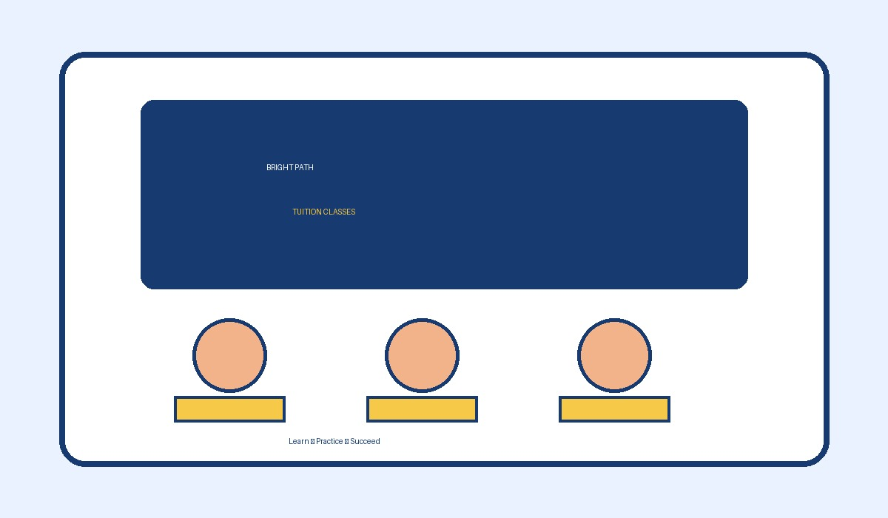

Welcome
Bright Path Tuition Classes helps learners from school grades five to twelve understand difficult topics with confidence. Our experienced teachers explain every concept in simple language, provide regular practice, conduct weekly tests, and guide each student with personal attention. Affordable batches, doubt-solving sessions, and a supportive classroom make learning enjoyable.
